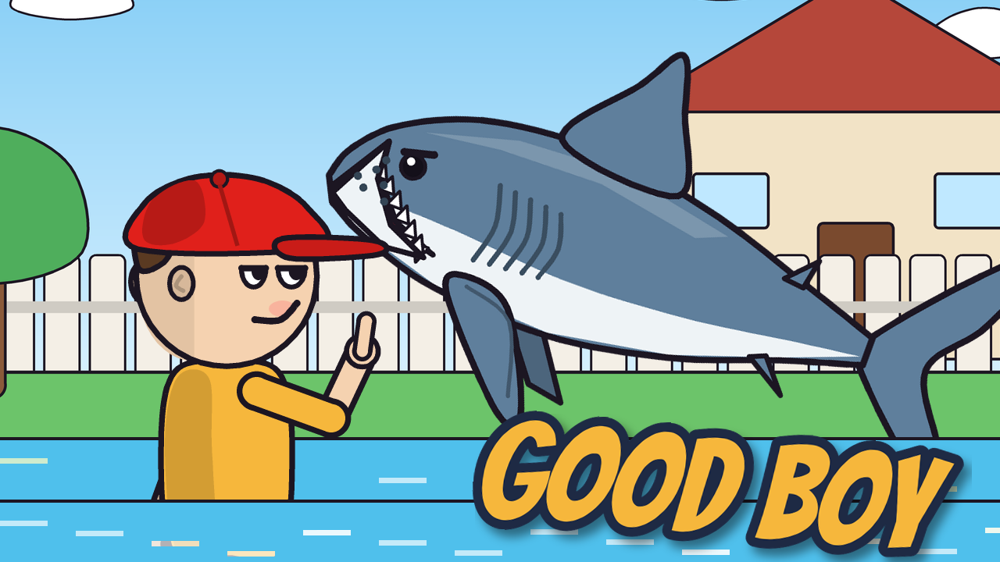
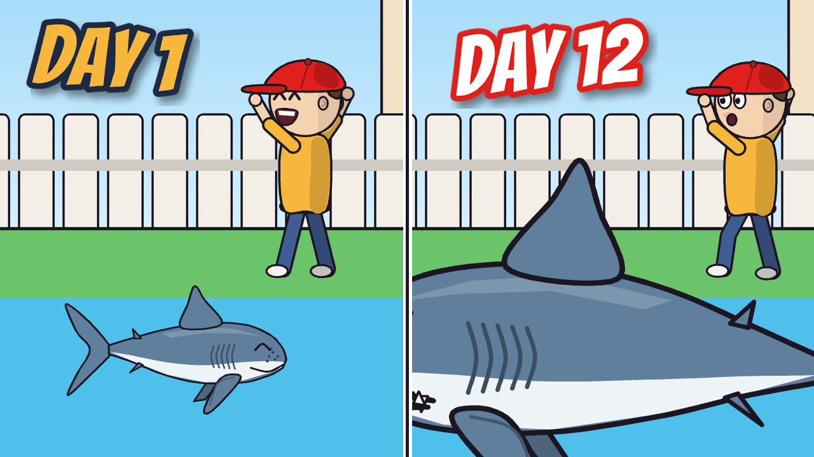
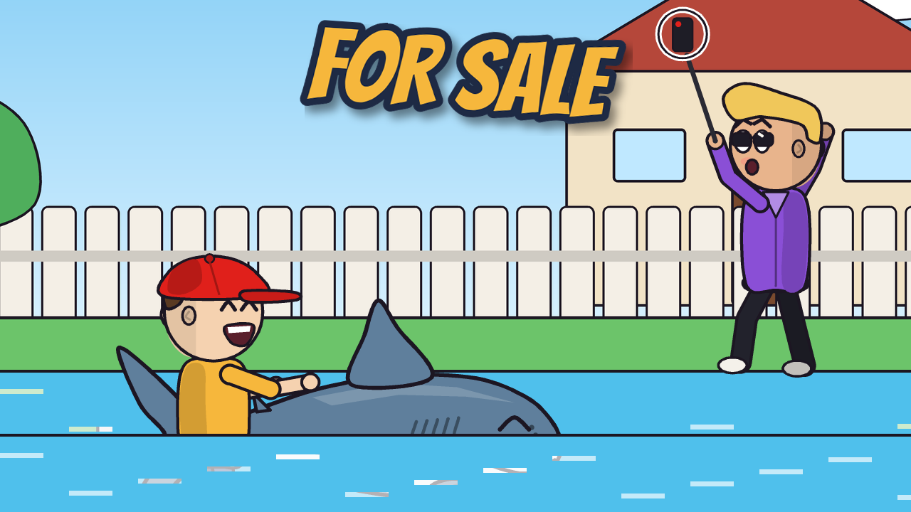
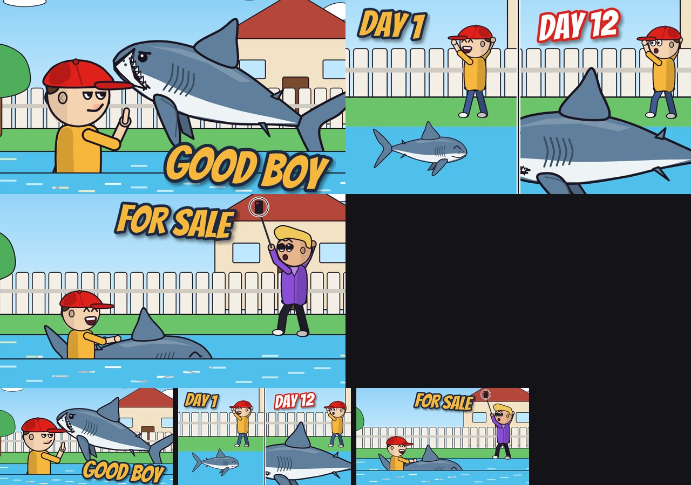

Doomed Doug: What If pilot w01, Pet Megalodon
New format test, 2026-11-26. Nothing uploaded. Branch whatif-pilot of the studio repo.
What I need from you
- Watch the pilot: approve it, or tell me what to change.
- Pick a title and a thumbnail (options below).
- After approval: upload it as a normal episode, then switch the daily pipeline to this format (gate 3).
Thumbnails




Titles, description and tags
w01 packaging: title, thumbnail, description, tags
Written 2026-11-26 with the yt-package skill (Jakeschincariol/youtube-agent-skill). Every title went through the skill's title.py linter, and a word-level edit distance was measured against all 39 DOOMPERK titles in Z:\Bryce-Brain\raw-sources\doomperk-teardown-2026-11\doomperk-videos.txt. The working title "What If You Had a PET Megalodon?" is 1 word off "What If You Had a PET Tornado?" and is retired. The script's H1 still carries it; change that line before render if the title card reads it.
Rules applied: under 60 characters, "What If" question form, exactly one CAPS word, at least 4 words away from every DOOMPERK title, and no "You Had a PET" pattern. Thumbnail labels never repeat a title word.
1. Ten title candidates, ranked
Scores are 1 to 5. Search fit is measured against "pet megalodon", "baby megalodon" and "megalodon in pool". Distance is the word edit distance to the nearest DOOMPERK title (4 or more words off scores 4 at least; a "pet" plus creature echo costs a point).
| Rank | Title | Chars | Curiosity | Clarity | Search fit | Distance | Total | Nearest DOOMPERK title (words off) | Linter |
|---|---|---|---|---|---|---|---|---|---|
| 1 | What If a Baby MEGALODON Lived in Your Pool for 30 Days? | 56 | 5 | 5 | 5 | 5 | 20 | SAITAMA Trained You for 100 Days (8) | 100 |
| 2 | What If a Baby MEGALODON Landed in Your Pool? | 45 | 4 | 5 | 5 | 5 | 19 | Every Girl Could See YOUR Rating (6) | 84, no number |
| 3 | What If Your Pet MEGALODON Outgrew Your Pool in 12 Days? | 56 | 5 | 5 | 5 | 4 | 19 | Your CRUSH Was a Secret AGENT (8) | 100 |
| 4 | What If You Raised a Baby MEGALODON in Your Pool? | 49 | 3 | 5 | 5 | 5 | 18 | You Had a DOMAIN EXPANSION in Real Life (5) | 84, no number |
| 5 | What If You Raised a Baby MEGALODON for 30 Days? | 48 | 4 | 5 | 4 | 4 | 17 | SAITAMA Trained You for 100 Days (6, same "for N Days" ending) | 100 |
| 6 | What If You Woke Up to a MEGALODON in Your Pool? | 48 | 4 | 5 | 4 | 4 | 17 | You Could CONTROL All Rats in Your City (6) | 84, no number |
| 7 | What If a Storm Threw a MEGALODON in Your Pool? | 47 | 4 | 4 | 4 | 5 | 17 | You Could CONTROL All Rats in Your City (6) | 84, no number |
| 8 | What If You Kept a Baby MEGALODON as a Pet? | 43 | 3 | 5 | 5 | 3 | 16 | You Had a DOMAIN EXPANSION in Real Life (6; "pet" framing echoes PET Tornado) | 84, no number |
| 9 | What If Your Pool Shark Was a Baby MEGALODON? | 45 | 4 | 3 | 4 | 4 | 15 | Your CRUSH Was a Secret AGENT (4) | 84, no number |
| 10 | What If a MEGALODON Pup Chose You as Its Owner? | 47 | 4 | 3 | 2 | 5 | 14 | SAITAMA Trained You for 100 Days (7) | 84, no number |
Every title runs past the 40 character mobile cut, but in each the subject (baby megalodon, pet megalodon) sits inside the first 40 characters, so the mobile feed still shows what the video is about.
2. Top 3 with thumbnails
The title and thumbnail are one unit: the label says what the title does not.
| Rank | Title | Thumbnail | Label | Why the pair works |
|---|---|---|---|---|
| 1 | What If a Baby MEGALODON Lived in Your Pool for 30 Days? | A: smug Doug waist deep in his pool, the megalodon rising huge behind him | GOOD BOY | The title says baby; the image shows the shark is no longer small. The label is Doug's proud owner line, and the gap between "good boy" and the teeth behind him is the click. Keep the shark at story scale (about 4 m, filling the pool), not a sea monster, so the thumbnail does not oversell. |
| 2 | What If a Baby MEGALODON Landed in Your Pool? | B: split, DAY 1 pup in the pool, DAY 12 the shark too big for the pool, water spilling | TOO BIG | The title gives the arrival; the split gives the problem it turns into. "DAY 1" and "DAY 12" stay as small corner tags; the big label is TOO BIG across the right panel. |
| 3 | What If Your Pet MEGALODON Outgrew Your Pool in 12 Days? | C: Doug in the pool with the pup while the influencer neighbour films in shock | FOR SALE | The title already says it outgrows the pool, so option B would repeat it. C adds the second threat: the neighbour wants to sell it. Put FOR SALE on the ring light phone screen or as a tag hung on the fence. |
Thumbnail brief for the winner (A, GOOD BOY): Doug front left, waist deep, chin up, eyes half shut, smug grin, red cap; the shark's head and open grin rise out of the water behind his right shoulder, its eyes big and friendly so it reads as a pet and not a kill. Background: bright blue pool and a hot yellow or orange sky, so the grey shark and red cap hold contrast at feed size. Label in heavy white letters with a black outline, top right, clear of the YouTube timestamp corner.
3. Description
Under 120 words (117).
`
A storm throws a two metre megalodon pup over your back fence and into your swimming pool. Now you have one fisheries officer, a neighbour who wants to sell it, and a shark that will not stop growing.
What is real: every science card. Megalodon died out about 3.6 million years ago, its name means big tooth, and scientists still argue about its size, its speed and how big its babies were. We show both sides.
What is invented: a living megalodon, the pool, the deadline and the rescue at sea.
Shark bites are rare, about 70 unprovoked bites a year worldwide. Swim with a buddy.
Chapters: [to be added from the final cut]
megalodon #whatif #sharks
`
4. Tags
`
pet megalodon, baby megalodon, megalodon in pool, megalodon pup, megalodon facts, what if megalodon was alive, megalodon cartoon, shark story animation, what if, doomed doug
`
Ship it, or change it?
Recommended: rank 1, "What If a Baby MEGALODON Lived in Your Pool for 30 Days?" with thumbnail A and the label GOOD BOY. Nothing here is published; Bryce or the pipeline publishes.
Checks
| Length (target 11 to 14 min) | 11.65 min PASS |
| Picture | 1920x1080 at 30 fps PASS |
| Loudness (-14 LUFS plus or minus 1) | -14.2 LUFS PASS |
| True peak (-1 dBTP or lower) | -1.9 dBTP PASS |
| Freezes over 2 s | 0 PASS |
| Black frames over 0.5 s | 0 PASS |
| Cuts a minute (target 20 to 31) | 24.2 measured by scene change PASS |
| Voices | 5 distinct PASS |
| Title drop (35 to 90 s, 72 to 153 words) | 39.8 s, word 128 PASS |
| Science cards | 24 cards, facts sheet has two sources per claim (screened: 32 OK, 7 fixed) |
| Em or en dashes in script | 0 PASS |
| Doug dies | no (rescue and release ending) PASS |
Independent review of the video
w01 video review: What If a Baby MEGALODON Lived in Your Pool for 30 Days?
Independent review, 2026-11-26. Reviewer did not build this episode. Judged from the 8 contact sheets (one frame every 3 s), extra full-size frames pulled from build/final.mp4 at line timings, script.md, build/lines.json, build/shots.json, build/qc.json, packaging.md, thumbs/sheet.jpg, the DOOMPERK reference sheets and the restyle plan. Audio was not heard; anything about voice is from timings only and is marked as such.
A 5 means it would hold its own next to DOOMPERK's top video.
Scores
| # | Criterion | Score |
|---|---|---|
| 1 | Hook (first 30 s) | 3 |
| 2 | Visual clarity | 2 |
| 3 | Look and polish | 2 |
| 4 | Pacing and variety | 2 |
| 5 | Story and comedy | 4 |
| 6 | Packaging | 3 |
| Average | 2.7 |
The script is the strongest part and is close to DOOMPERK level. The picture is not: it is clean and consistent in style, but it is full of framing and layering glitches, and many beats the narration names never appear on screen. Fix the picture before upload.
1. Hook: 3
What works:
What holds it back:
packaging.md retired it for being one word off DOOMPERK's "What If You Had a PET Tornado?" and asked for it to be changed before render. It also does not match the title viewers clicked.2. Visual clarity: 2
Overlays and cards read well at full size (head 30+ px, fact text readable, source line small but legible on desktop). The problem is that what the narration names is often not on screen, and the cards often cover faces.
Card and WORD checks against lines.json:
| Line time | What is said | On screen? |
|---|---|---|
| 8.9 s | Tanner intro | Yes. Name card at 0:09. |
| 46.6 s | Wren speaks after her intro at 42.3 s | Late but yes. "WREN ADEYEMI / Bait shop. Marine biology student." at 47.5 s, 4 s after the narrator names her. |
| 51.8 s | "died out about three point six million years ago" | Yes. GONE FOR MILLIONS OF YEARS card at 0:51, but it covers Wren's head at 0:51 and 0:57. |
| 143.9 to 146.3 s | "Found me!" then "Those dark dots on his snout" | No. The shot tagged close:meg at 143.9 s is a medium pool shot; no snout dots, no hand under sand, Doug's head cut off at the top (144.5 s). |
| 158.1 s | "Tap, tap, find, fish!" | Yes. TAP TAP word over Doug holding a fish (158.8 s). |
| 206.3 to 212.3 s | "Three, two." then CRUNCH, then MONSTER BITE card | Card yes (212.3 s). The bite no: at 209.5 s and 211.8 s the shark sits in the pool showing teeth while Tanner waves a stick; no watermelon in the mouth, no CRUNCH word, no flash, no ring light lost. Doug's head is cut off in both frames. |
| 299.0 s | Hobbs intro | Partly. Name card at 300.5 s is truncated: "OFFICER MARLENE HOBB" runs off the red bar. |
| 328.6 s | "two weeks to show me a plan" | Yes. TWO WEEKS word. |
| 440.6 s | "Great whites grow to about six metres. Right now, that is still bigger than Meatball." | Contradicted. At 448.5 s and 7:21 the great white is drawn clearly smaller than Meatball, who is under the kayak. |
| 515.1 to 522.0 s | phone and ring light sink glowing, the boat spins away | No. SPLASH word over the boat and Meatball (8:36, 520 s); no phone, no ring light, no spin, no Tanner. |
| 542.4 s | "Day three. The sand. The hand. Tap, tap, find, fish." | No. The flashback reuses a wide daytime pool shot with Doug's head cut off (545 s) and a DAY 30 badge; no sand, hand or snout, and no tint to mark it as a memory. |
Other named things missing: the empty fridge, frozen turkey and receipts (161 s, 2:42 to 3:03); the PARTNERSHIP contract (drawn as "DEAL", 3:09); the school of fish on day 22 (6:45 to 6:54); the boat "on the rocks" (sits on sand, 9:45 and 10:00); "lights off" on day 3 (2:15 to 2:39 is lit like day with only a navy sky band).
3. Look and polish: 2
Good: one consistent flat style, clean outlines, readable silhouettes, Doug's red cap and yellow top read at a glance, Wren's deadpan half-lidded eyes suit her voice brief, the lagoon set (6:21 onward) and night sea are attractive, the DAY badge, name cards and kinetic words are a coherent design system in Doug's colours, and it looks nothing like DOOMPERK's 3D ball-heads, as planned.
Glitches (timestamps from the sheets unless marked s):
4. Pacing and variety: 2
Measured numbers are fine on paper: QC "Cuts a minute (target 20 to 31): 25.0"; shots.json has 329 shots (28 a minute); 149 speaker changes in 11.4 min of voice (13.1 a minute, above DOOMPERK's median of about 8). The picture still feels repetitive:
frame: close:meg 4 times). The title character is mostly a wide side-view sticker.lines.json, not heard): 1,954 words in 684 s, 171 words a minute, against DOOMPERK's measured 100 to 136. The narrator holds 60% of voiced time, so it is less dialogue-led than the model. No gap between lines is longer than 1.0 s anywhere, so punchlines get no beat ("He has met four of them." runs straight into "His name is Meatball."). Several Doug lines look too fast to land: "Hi, buddy!" 0.45 s, "That's my boy!" 0.56 s, "Sixty for me?" 0.64 s, "Is that his mum?" 0.64 s, "His name is Meatball." 0.77 s. Check these by ear.5. Story and comedy: 4
The script is the episode's real strength.
Why not 5:
6. Packaging: 3
Must fix before upload (top 5)
shots.json (fail on any partial head).Also fix while in there (smaller, same pass): truncated Hobbs name card (300.5 s); cards over Wren's face (0:51, 0:57, 2:30, 2:54 to 3:03), so place cards on the side away from the speaker; the size-diagram label overlap (4:33, 441 s); TIDE TIMES showing above the card (5:57); day 3 "lights off" lit like day (2:15 to 2:39); grey placeholder boxes at the harbour (8:15 to 8:21); the stray blue stick (2:15 to 2:30); and listen to the fast Doug lines listed under Pacing.
Nice to have (3)
---
v2 re-score (2026-11-26)
Same rubric and strictness. Judged from the regenerated sheets, 12 extra full-size frames from the v2 final.mp4, the v2 qc.json (11.65 min, 25.9 cuts a minute, title drop 39.8 s at word 128, all PASS), lines.json, shots.json and the new thumbs/sheet.jpg.
| # | Criterion | v1 | v2 |
|---|---|---|---|
| 1 | Hook | 3 | 3.5 |
| 2 | Visual clarity | 2 | 3 |
| 3 | Look and polish | 2 | 2.5 |
| 4 | Pacing and variety | 2 | 2.5 |
| 5 | Story and comedy | 4 | 4 |
| 6 | Packaging | 3 | 3.5 |
| Average | 2.7 | 3.2 |
A real step up, but it is not yet at DOOMPERK level. Most fixes landed partly. Two new glitches in the harbour scene are as bad as anything in v1.
What the fixes achieved
lines.json still carries word: PET MEGALODON; the card on screen is correct.megclose shots, up from 4.Still broken
New in v2
shots.json has a close:doug shot at 488.0 to 490.6 s with hide: ['doug'], so the camera frames a character who is hidden.Remaining must-fix (v2)
hide. Pin Doug to the dock's ground line. Replace the grey boxes with a drawn harbour backdrop (boats, sheds, lamp posts).Not re-scored as broken, since they were left to the owner: Doug's agency and the Cash or Meatball split. They remain the reason Story is 4 and not 5.
---
v3 re-score (2026-11-26)
Same rubric and strictness. Judged from the regenerated sheets, 6 extra full-size frames from the v3 final.mp4 (149.5 s, 213 s, 275 s, 444.5 s, 547 s, 650 s), and the QC numbers given with the render (11.65 min, -14.2 LUFS, -1.9 dBTP, 24.1 cuts a minute, 0 freezes). The thumbnails are unchanged since v2.
| # | Criterion | v1 | v2 | v3 |
|---|---|---|---|---|
| 1 | Hook | 3 | 3.5 | 3.5 |
| 2 | Visual clarity | 2 | 3 | 3.5 |
| 3 | Look and polish | 2 | 2.5 | 3 |
| 4 | Pacing and variety | 2 | 2.5 | 3 |
| 5 | Story and comedy | 4 | 4 | 4 |
| 6 | Packaging | 3 | 3.5 | 3.5 |
| Average | 2.7 | 3.2 | 3.4 |
Steady progress. Nothing as bad as the v1 or v2 harbour glitches is left. The remaining faults are placement and polish, not broken scenes. It still would not hold its own next to DOOMPERK, mainly because of one-angle coverage and a few unfinished beats.
What the fixes achieved
Still broken
New in v3
Remaining must-fix (v3)
Doug's agency and the Cash or Meatball split are still left to the owner. They keep Story at 4.
---
v4 re-score (2026-11-27)
Same rubric and strictness. Judged from the regenerated sheets, 6 extra full-size frames from the v4 final.mp4 (84.5 s, 153 s, 234 s, 258 s, 274 s, 548 s), and the QC numbers given with the render (11.65 min, -14.2 LUFS, -1.9 dBTP, 24.2 cuts a minute, 0 freezes). The thumbnails are unchanged since v2.
| # | Criterion | v1 | v2 | v3 | v4 |
|---|---|---|---|---|---|
| 1 | Hook | 3 | 3.5 | 3.5 | 3.5 |
| 2 | Visual clarity | 2 | 3 | 3.5 | 3.5 |
| 3 | Look and polish | 2 | 2.5 | 3 | 3.5 |
| 4 | Pacing and variety | 2 | 2.5 | 3 | 3 |
| 5 | Story and comedy | 4 | 4 | 4 | 4 |
| 6 | Packaging | 3 | 3.5 | 3.5 | 3.5 |
| Average | 2.7 | 3.2 | 3.4 | 3.5 |
What the fixes achieved
Still broken
Fix: apply the rule per shot, not per line, so any shot that shows a card uses the shark close-up or empty background.
New in v4
Nothing new broke in the frames checked. Cuts are 24.2 a minute, inside the 20 to 31 target.
Verdict
Ready for owner review, not ready to upload. No scene is broken any more, and every story beat the narration names is now on screen. What remains is polish: cards covering Wren in five wide shots, the flashback sand layer, edge crops and one-angle backyard coverage. That polish keeps it at 3.5 rather than DOOMPERK's level, and it should be fixed in the same pass as any owner notes before upload.
Fact and policy screen of the script
w01 What If You Had a PET Megalodon? : independent script review
Reviewer: independent screener (did not write the script). Date: 2026-11-26.
Inputs: script.md (1,860 spoken words), facts.md, the restyle plan Z:\Bryce-Brain\wiki\answers\doomed-doug-doomperk-restyle-plan.md (Script anatomy, What to copy and what to change, Policy limits), reference transcripts cOhgKbcx1FA (Pet Tornado) and FXJO5fIHidQ (Infinite IQ island).
Sources opened on 2026-11-26 by page fetch: Natural History Museum (megalodon page, shark teeth page), ScienceDaily on Boessenecker 2019, UCLA Newsroom 2023, EurekAlert on Cooper 2022, Florida Museum (Shark Biology, Shark Attack FAQ, nursery article, 100 years object page), Shark Trust (anatomy, bull shark), NOAA Fisheries (12 Shark Facts, White Shark), Science News 2021, DePaul 2025 release, Max Planck 2022 release, Discover on Wroe 2008, National Geographic 2025, UF IFAS blog. Smithsonian and Live Science pages return 403; those rows rest on the other source plus search text, as facts.md says.
1. Facts
| # | Claim (spoken or CARD) | Scene | Verdict | Exact fix |
|---|---|---|---|---|
| 1 | Megalodon died out about 3.6 million years ago | 03, 26 | OK | NHM and ScienceDaily (PeerJ 2019) both say 3.6 |
| 2 | Older books said 2.6 million; a 2019 fossil study pushed it back | 03 | OK | NHM and ScienceDaily both give 2.6 as the old date |
| 3 | The name means big tooth | 03 | OK | NHM "large tooth"; Smithsonian "big tooth" (search text) |
| 4 | CARD: "Adult megalodon teeth reached about 18 centimetres" | 03 | FIX | 18 cm is the largest teeth, not a typical adult tooth. Card body: "The biggest teeth reach about 18 centimetres". The spoken line ("could reach") is fine |
| 5 | Sharks keep a careful balance of salt and water | 04 | OK | Shark Trust bull shark page |
| 6 | Only a few sharks, like bull sharks, survive long in fresh water | 04 | OK | Florida Museum (a couple of species), Shark Trust (about 5 percent, most only briefly) |
| 7 | Many sharks must keep moving to breathe | 06 | OK | Shark Trust anatomy, NOAA 12 facts |
| 8 | Nurse sharks can pump water and rest on the bottom | 06 | OK | Shark Trust, NOAA |
| 9 | "Every living thing makes a tiny electric field when its muscles work" (Wren) and "Every living thing gives off a faint electric field when its muscles move" (Narrator) | 07, 23 | FIX | Plants and microbes have no muscles; the Florida Museum says "all living animals". Change both to "Every animal" ("Every animal makes a tiny electric field when its muscles work. Even yours, somehow." / "Every animal gives off a faint electric field when its muscles move.") |
| 10 | Snout pores sense faint electric fields; sharks use them to find prey under sand | 07 | OK | Florida Museum (stingrays buried in sand), NOAA (electroreceptors) |
| 11 | A 2023 tooth study says megalodon ran about 7 degrees warmer than the sea | 08 | OK | UCLA: about 7 C warmer than the surrounding seawater; PNAS 2023 |
| 12 | Staying warm burns a lot of fuel | 08 | OK | UCLA ("voracious appetite"), PNAS |
| 13 | One model: a 16 metre adult needed over 98,000 kilocalories a day | 08 | OK | EurekAlert and Cooper 2022 both say 16 m, over 98,000 kcal |
| 14 | CARD header "STRONGEST BITE KNOWN" | 09 | FIX | Neither source says strongest of any animal; NHM says "one of the most powerful predators", Discover only compares with T. rex and a lion. Change header to "MONSTER BITE" (body stays) |
| 15 | One model put the adult bite at six to ten times a great white's | 09 | OK | NHM: 108,514 to 182,201 N against 18,216 N (5.96 to 10.0 times); Discover: 10.8 to 18.2 t against 1.8 t |
| 16 | Sharks shed teeth constantly; new rows move forward like a conveyor belt | 10 | OK | NHM teeth page, NOAA |
| 17 | Some sharks go through 30,000 teeth in a lifetime | 10 | OK | NHM (30,000), NOAA (sandbar, about 35,000) |
| 18 | "Real megalodons grew slowly" (Wren) | 11 | FIX | The growth rate comes from three vertebrae of one shark (Science News). Stated as settled. Change to: "This is weird. The one megalodon we can age grew slowly." |
| 19 | Sharks lay down rings in their backbones, a bit like a tree | 11 | OK | NOAA (with a caveat that bands are not always yearly), The Conversation |
| 20 | One fossil megalodon grew about 16 centimetres a year | 11 | OK | Science News, Live Science |
| 21 | Birth size: one study said 2 metres, a 2025 study said nearly 4 | 11, 26 | OK | Science News (about 2 m), DePaul 2025 (3.6 to 3.9 m), NHM (up to 3.9 m) |
| 22 | Older estimates said 15 to 18 metres | 12 | OK | NHM, National Geographic |
| 23 | The 2025 study said up to 24 metres, slimmer, like a lemon shark | 12 | OK | DePaul 2025 (24.3 m "largest possible reasonable estimate", lemon shark), NHM |
| 24 | Other experts call the slim shape tentative; scientists still disagree | 12, 26 | OK | National Geographic 2025 quotes Jack Cooper: "tentative at best"; NPR |
| 25 | CARD: estimates range from about 15 to 24 metres | 12 | OK | As rows 22 and 23 |
| 26 | No whole megalodon found; cartilage rarely fossilises; mostly teeth and a few backbones | 12 | OK | NHM teeth page, Science News, DePaul ("no known complete skeletons") |
| 27 | "Megalodon babies grew up in nurseries. Shallow coastal water, plenty of food, fewer big predators." (Wren) | 15 | FIX | Stated as settled. NHM says "is thought to", and the Florida Museum notes some scientists argue megalodon did not need nurseries. Change to: "Megalodon babies seem to have grown up in nurseries." |
| 28 | Panama: 10 million year old teeth from mostly young megalodons, in a once shallow sea | 15 | OK | Florida Museum, National Geographic, Pimiento 2010 PLOS ONE |
| 29 | One model: adult cruising about 5 km/h; newer study 2 to 3.5 | 16 | OK | EurekAlert and Cooper 2022 (1.4 m/s), DePaul 2025 (2.1 to 3.5 km/h) |
| 30 | Adults ate whales; fossil whale bones carry their bite marks | 17 | OK | NHM, EurekAlert |
| 31 | Megalodon was a separate line, not the great white's ancestor | 18 | OK | NHM (different lineage), Florida Museum ("cousin ... not the direct ancestor") |
| 32 | Great whites grow to about 6 metres | 18 | OK | NOAA (about 20 to 21 ft), Smithsonian (search text) |
| 33 | Some scientists think great white competition helped finish megalodon off | 18 | OK | Hedged correctly. Max Planck ("may have contributed", "additional research is needed"), NHM |
| 34 | Cooling, shrinking nurseries, a costly warm body; nobody is sure which mattered most | 18 | OK | NHM, UCLA |
| 35 | Night is when lots of sharks feed; splashing draws attention | 22 | OK | Florida Museum FAQ, UF IFAS (sunset to sunrise; avoid excessive splashing) |
| 36 | Scene 23 uses the electric sense to find Tanner across the open sea at night | 22, 23 | FIX | The card text is true, but the Florida Museum says the sense works "at close range". The story implies long range. Add it to the made-up list in scene 26 (see must-fix 2) |
| 37 | About 70 unprovoked shark bites a year worldwide | 26 | OK | Florida Museum (average of 70), Australian Museum (69 in 2023). Optional: say "on average, about seventy", since single years vary |
| 38 | Safety rule: buddy; out of the sea at dawn, dusk and night; away from people fishing | 26 | OK | Florida Museum FAQ tips 1, 4 and 8; UF IFAS (group, sunset to sunrise, fishermen) |
| 39 | Story number: four hundred buckets swap a pool's water | 05 | FIX (optional) | Even a small pool holds about 20,000 to 30,000 litres, which is thousands of buckets. Viewers will check. Make it FOUR THOUSAND BUCKETS, "Bucket three thousand nine hundred and ninety nine", "Bucket four thousand, chat!", "He filmed all four thousand." |
Count: 39 claims. OK 32, FIX 7, CUT 0. No wrong numbers in the science. Every science row has two real sources. Disagreements (birth size, adult size, body shape, speed, extinction cause, nurseries) are flagged in the script except rows 18 and 27.
2. Policy and safety
3. Format
| Beat | Result |
|---|---|
| Cold open, numbers in sentence one | Pass: "a storm threw a two metre shark over your back fence" |
| Rival named in about 20 s | Pass: name card after 27 spoken words, narrator names him at word 39 (about 12 s at 195 wpm) |
| Time-skip tease | Pass: four future beats, last one a cliffhanger ("on night thirty"). Only the last beat is dated, which also keeps it clear of DOOMPERK's "By day nine... By day 18..." wording |
| Title drop between 72 and 153 spoken words | Pass: the title question runs from word 130 to 137 |
| Science cards | Pass: 21 sourced cards |
| Callback at the climax | Pass: tap tap (scene 07) returns in scenes 22, 23 and 25 |
| Honesty and safety close | Pass with fixes (see section 2) |
| Two-option comment question | Pass: "Comment Cash or Meatball." Continuity note: scene 27 says "back to day six" but Tanner offered a contract on day six, not cash. Say "Picture day six again. This time Tanner offers you real money for Meatball." |
| Doug does not die | Pass |
| Length | Check: 1,860 spoken words is about 9.1 to 9.8 minutes at the plan's 190 to 205 wpm, below the 10 to 12 minute target. Time the voiced draft; if under 10 minutes, add one action scene in act two (see retention fix 2) rather than more science lines |
4. Originality (against cOhgKbcx1FA Pet Tornado and FXJO5fIHidQ island)
No joke is copied. These lines and structures are copied or near-copied:
| Script line | Reference | Risk | Fix |
|---|---|---|---|
| S21: "The tide is running out through the reef gap. It carries Tanner into open water." Plus the whole climax: the rival goes out alone at night against the authority's rule, the tide through a reef gap carries him out, the hero saves him, the rival confesses | Island: "The tide ran out through a gap in the reef. It took the raft with it." and "Now the tide is running out. The water in the lagoon rushes out through the gap in the reef. Same gap, same tide." The rival sneaks out alone and is saved | High: near-copy line and the reference's own climax device | Change the mechanism and the words. Example: Tanner's net snags Meatball's tail fin, the rented boat's engine stalls, the wind pushes the drifting boat out past the reef, Tanner falls in reaching for the floating phone. NARRATOR: "The boat drifts one way. The ring light sinks the other. And the wind pushes Tanner out past the reef." |
| S02: "The only one who can find him is the pet he tried to sell." | Pet Tornado: "The only thing that can stop it is your pet." | Medium | "And his only hope has fins, and a grudge." or "And the one who comes for him is the shark he tried to sell." |
| S02: "So, what if you had a pet megalodon?" and the title "What If You Had a PET Megalodon?" | "So, what if you had a pet tornado?" and DOOMPERK's 9.4x hit "What If You Had a PET Tornado?" | Medium: one word off their title, with the same CAPS word | Decision for Bryce (the slate is his gate). Option: "What If a Baby MEGALODON Landed in Your Pool?" with the drop "So, what if a baby megalodon landed in your pool?" (still inside 153 words) |
| S26: "So, what was real? ... What we made up: ... And one real rule." | Pet Tornado: "So is any of this real? ... all real ... we made that up. And the real rule, ..." | Medium: the format is allowed, the wording is too close | "So how much of that could happen? ... The parts we invented: ... And one rule worth keeping." |
| S27: back to an early day, the rival's offer, "Do you take it? Comment Cash or Meatball." | Island: "Day three. Riker has the palms... Which camp do you sleep in? Comment Riker or Rocks." | Low | Keep the two-option question; change the frame as in section 3 |
| S01: "His name is Meatball." / "You named a shark Meatball?" | Pet Tornado: "His name is Spinny." / "He's a tornado, Pia." | Low | "I'm calling him Meatball." |
| S10 "For the first time in his career", S24 "For the first time, Tanner says..." | Both references use "For the first time" as a turn marker | Low | Change one: S24 "Tanner says something with no camera on. It is a first." |
5. TTS readiness
Script check run over every spoken line: no digits, no abbreviations, no parentheses, no em or en dashes. Digits appear only on CARD and name-card lines, which are on screen. Two small fixes:
Pronunciation hints (British or NZ English):
| Word | IPA |
|---|---|
| megalodon, megalodons | /ˈmɛɡələdɒn/, /ˈmɛɡələdɒnz/ |
| Adeyemi | /ˌɑːdeɪˈjɛmi/ |
| Sloane | /sləʊn/ |
| Marlene | /mɑːˈliːn/ |
| Wren | /rɛn/ |
| kilocalories | /ˈkɪləʊˌkæləriz/ |
| cartilage | /ˈkɑːtɪlɪdʒ/ |
| fossilises | /ˈfɒsɪlaɪzɪz/ |
| livestreams | /ˈlaɪvstriːmz/ (TTS may say "liv") |
| Panama | /ˈpænəmɑː/ |
| lagoon | /ləˈɡuːn/ |
| tentative | /ˈtɛntətɪv/ |
| chlorine (if voiced) | /ˈklɔːriːn/ |
| merch | /mɜːtʃ/ |
| Fisheries | /ˈfɪʃəriz/ |
6. Retention: three weakest moments
Verdict
VERDICT: PASS WITH FIXES
Must fix before voicing:
Should fix: the title and title drop are one word off DOOMPERK's "What If You Had a PET Tornado?" (Bryce's call); four hundred buckets to four thousand; scene 27 "back to day six" continuity; "a, uh," in scene 20; one of the two "For the first time" lines; retention fixes 1 and 3; set the audience to not made for kids.
Full script
What If a Baby MEGALODON Lived in Your Pool for 30 Days? (working title: What If You Had a PET Megalodon?)
<!-- words: 1860 -->
CAST
| id | name | role | voice brief |
|---|---|---|---|
| narrator | Narrator | Calm second person storyteller who talks to the viewer as you | Man, forties, calm, deadpan and dry, warm underneath, unhurried |
| doug | Doug | You, the viewer: a cheerful, hopeful, slightly gullible pet owner in a red cap | Man, late twenties, bright and eager, short happy bursts |
| tanner | Tanner Sloane | Rival: next door neighbour and small time influencer who wants to sell the shark | Man, mid twenties, loud presenter energy, fast, always performing |
| wren | Wren Adeyemi | Science sidekick: bait shop worker and marine biology student | Woman, early twenties, flat, dry and quick, never impressed |
| hobbs | Officer Marlene Hobbs | Authority: local fisheries officer | Woman, fifties, low and gravelly, slow, bone dry |
SETS
| id | description |
|---|---|
| backyard_pool_storm | Night, heavy rain and lightning. A small suburban backyard with a rectangular swimming pool, a low wooden back fence, sand dunes and dark sea beyond the fence, the neighbour's lit window on the right |
| ocean_title | Deep blue open ocean seen from underwater, light rays from the surface, a huge dark shark silhouette far below, empty space in the middle for the title |
| backyard_pool | Same backyard in bright morning sun: blue pool, white tiles, deckchair, garden hose, wooden fence with the neighbour's house behind, dunes and sea past the back fence |
| doug_kitchen | Small messy kitchen: fridge with the door open and empty shelves, a pile of fish shop receipts on the bench, a window over the sink that looks at the neighbour's house |
| bait_shop | Cramped seaside bait shop: fishing rods on the wall, bait buckets, a glass counter, a big paper map of the coast pinned behind the counter |
| lagoon_nursery | Bright shallow lagoon with clear green water, a white sand bottom, a curved reef with one gap to the open sea, a concrete boat ramp and a wooden sign reading GULL LAGOON MARINE RESERVE |
| harbour_dock | Small harbour at dusk: wooden jetty, a few small boats tied up, orange sky, coiled ropes and a lamp post |
| reef_edge_night | Midnight at the reef gap: black sea, white surf on the reef, stars, the lagoon calm behind and open swell in front |
| open_sea_night | Open ocean at night: black water to every edge, a few stars, small waves, no land in sight |
| beach_dawn | Beach at dawn: pink and gold sky, wet sand, the reef in the distance, a small boat stranded on rocks at one end |
| honesty_studio | Clean flat background in Doug's colours, red and navy, with space for icons and text to pop in |
PROPS
| id | description |
|---|---|
| meatball_2m | Megalodon pup, two metres long: chunky grey shark body, pale belly, big round friendly eyes, a wide grin full of small triangle teeth, dark dots on the snout |
| meatball_3m | The same pup at three metres: longer and thicker, same eyes, dots and grin, fills most of the pool |
| meatball_4m | The same shark at four metres: sleeker, slightly more grown up face, same eyes and snout dots |
| doug_torch | Yellow plastic torch with a beam |
| ring_light_phone | Tanner's phone on a black gimbal stick with a round white ring light clipped on, red LIVE dot on the screen |
| bait_bucket | White plastic bucket with a handle, sloshing sea water |
| tin_of_meatballs | Open tin of meatballs in sauce with a fork in it |
| fishing_rod_fish | Fishing rod with a silver fish dangling from the line |
| kid_sandpit | Pile of yellow sand tipped into the shallow end of the pool, with a toy spade |
| crayon_contract | One page contract titled PARTNERSHIP, signed in big orange crayon |
| watermelon_selfie_stick | Whole watermelon taped to the end of a long selfie stick |
| filter_basket_teeth | Pool filter basket full of small white triangle shark teeth |
| hobbs_ute | White fisheries ute with a blue stripe and the word FISHERIES on the door |
| giant_net | Huge net on a long pole, longer than the ute |
| hobbs_clipboard | Brown clipboard with a form and a pen on a string |
| coast_map | Paper map of the coast with a lagoon circled in red marker |
| fossil_tooth | Big dark grey fossil megalodon tooth, about hand sized, used as a paperweight |
| fish_truck | Small truck with a big blue water tank on the back and a ramp |
| orange_kayak | Orange inflatable two person kayak with paddles |
| great_white | Great white shark: grey back, white belly, black eyes, tall dorsal fin, bigger than Meatball |
| rented_boat | Small white aluminium motor boat with a RENTAL sticker |
| headlamps | Two head torches with bright white beams |
| foil_blanket | Shiny silver emergency blanket |
| fish_snack | Single silver fish, thrown as a treat |
| fish_receipts | Long curly pile of fish shop receipts |
SCENE 01 | set: backyard_pool_storm | day: 1
[Night, rain, lightning. Doug in pyjamas and his red cap stands at the edge of the pool holding doug_torch. A grey fin circles. meatball_2m surfaces and grins at him.]
NARRATOR: Last night, a storm threw a two metre shark over your back fence and into your swimming pool.
NARRATOR: It's a baby. And it seems to like you.
DOUG [delighted]: Hi, buddy!
[Over the fence, a ring light snaps on. Tanner leans over with ring_light_phone. Name card: TANNER SLOANE, 41,000 FOLLOWERS.]
TANNER [hyped]: Doug! Is that a shark? Don't move. This is content.
WORD: CONTENT
NARRATOR: Your neighbour, Tanner Sloane. Forty one thousand followers. He has met four of them.
DOUG [proud]: His name is Meatball.
TANNER: You named a shark Meatball?
[Doug holds up tin_of_meatballs, empty.]
DOUG: He ate my meatballs.
SCENE 02 | set: ocean_title | day: -
[Flash forwards, one quick image per beat: the pool too small, Hobbs with giant_net, Tanner shaking hands with a shadowy buyer, then black water and a single splash.]
NARRATOR: Here is your next month. A pool that shrinks every morning. A fisheries officer with a very large net.
NARRATOR: A neighbour who wants to sell your pet to a stranger.
NARRATOR: And on night thirty, Tanner is alone in the open sea, in the dark, next to a hungry megalodon.
NARRATOR: And the shark he tried to sell gets to decide what happens next.
WORD: PET MEGALODON
NARRATOR: So, what if a baby megalodon lived in your pool for thirty days?
SCENE 03 | set: backyard_pool | day: 1
[Morning. Storm over. Wren in a bait shop apron stares into the pool. Doug kneels at the edge. Name card: WREN ADEYEMI, BAIT SHOP, MARINE BIOLOGY STUDENT.]
NARRATOR: Wren Adeyemi works at the bait shop and is two years into a marine biology degree.
WREN [flat]: Doug. That's a megalodon.
DOUG: Is that a type of goldfish?
WREN: It's a type of extinct.
CARD: GONE FOR MILLIONS OF YEARS | Megalodon died out about 3.6 million years ago | SOURCE: Natural History Museum, PeerJ 2019
NARRATOR: Megalodon died out about three point six million years ago. Older books said two point six, until a twenty nineteen fossil study pushed it back.
CARD: WHAT THE NAME MEANS | Megalodon means big tooth | SOURCE: Natural History Museum, Smithsonian
WREN: The name means big tooth. Look at that jaw.
CARD: BIG TOOTH | The biggest teeth reach about 18 centimetres | SOURCE: Natural History Museum, Smithsonian
NARRATOR: The biggest megalodon teeth reach about eighteen centimetres. Meatball's are smaller. For now.
DOUG [fond]: He's got a lovely smile.
SCENE 04 | set: backyard_pool | day: 1
[Meatball drifts sideways near the surface, sluggish. A chlorine float bobs past.]
WREN: Problem. Your pool is fresh water with chlorine in it.
DOUG [worried]: Is he sad?
WREN: He's a sea animal, Doug. His whole body runs on salt.
CARD: SALT WATER ONLY | Only a few sharks, like bull sharks, survive fresh water long | SOURCE: Florida Museum, Shark Trust
NARRATOR: Sharks keep a careful balance of salt and water inside them. Only a few, like bull sharks, survive long in fresh water.
DOUG: Can I just add salt?
WREN: From what, Doug? Chips?
SCENE 05 | set: backyard_pool | day: 1
[Montage: Doug and Wren carry bait_bucket after bait_bucket from the beach, over the dunes, into the pool. Tanner films from a deckchair.]
NARRATOR: So you swap the pool water for sea water, one bucket at a time.
WORD: FOUR THOUSAND BUCKETS
DOUG [panting]: Bucket three thousand, nine hundred and ninety nine.
TANNER [to phone]: Bucket four thousand, chat! We did it!
NARRATOR: Tanner carried no buckets. He filmed all four thousand.
SCENE 06 | set: backyard_pool | day: 2
[Meatball hangs still, staring up at Doug with big eyes, then slowly tilts and sinks towards the pool floor.]
NARRATOR: Day two. Meatball stops swimming to stare at you. Then he starts to sink.
DOUG [panicked]: Wren! He's broken!
WREN: Lots of sharks have to keep moving to push water over their gills.
CARD: SWIM TO BREATHE | Many sharks must keep moving to breathe | SOURCE: Shark Trust, NOAA Fisheries
NARRATOR: Nurse sharks can pump water and rest on the bottom. Many others must keep swimming, or they cannot breathe.
WREN: Nobody can test a megalodon, so we treat him like a swimmer.
[Doug turns the pool jets to full, then walks laps of the pool holding fishing_rod_fish. Meatball follows the fish round and round.]
NARRATOR: Your fix is the pool pump on full and a fish on a fishing rod. You walk laps until midnight.
WORD: KEEP SWIMMING
DOUG [dizzy]: Lap two hundred. He's breathing. I'm not.
SCENE 07 | set: backyard_pool | day: 3
[Night. Pool light off. kid_sandpit tipped into the shallow end. Doug pushes his hand under the sand. Wren crouches beside him.]
NARRATOR: Day three. Wren teaches you a game.
WREN: Bury your hand. Lights off. Don't move.
DOUG [whisper]: He'll never find me.
[Instantly, Meatball's snout bumps the exact spot. Close up on the dark dots on his snout.]
DOUG [delighted]: Found me!
WREN: Every animal makes a tiny electric field when its muscles work. Even you, somehow.
CARD: SIXTH SENSE | Pores on a shark's snout sense faint electric fields | SOURCE: Florida Museum, NOAA Fisheries
NARRATOR: Those dark dots on his snout sense faint electric fields. Sharks use them to find prey hidden under sand.
[Doug taps the surface twice with two fingers. Meatball finds his hand. Doug gives him fish_snack.]
NARRATOR: So you make it a rule. You tap the water twice. He finds your hand. He gets a fish.
WORD: TAP TAP
DOUG: Tap, tap, find, fish!
NARRATOR: Hold on to that.
SCENE 08 | set: doug_kitchen | day: 6
[Fridge open and empty. fish_receipts curl across the bench. Doug and Wren stare into the fridge.]
NARRATOR: Day six. Meatball has eaten everything in your fridge, your freezer, and a frozen turkey you were saving for a special occasion.
DOUG: He's a growing boy.
WREN: He's a furnace. A twenty twenty three study of megalodon teeth says it ran warm.
CARD: WARM BODIED SHARK | Teeth suggest about 7 degrees warmer than the sea | SOURCE: UCLA, PNAS 2023
NARRATOR: About seven degrees warmer than the sea around it, the team estimated. Staying warm burns a lot of fuel.
CARD: A HUNGRY GIANT | Model: an adult needed over 98,000 kilocalories daily | SOURCE: University of Zurich, Science Advances
NARRATOR: One computer model says a sixteen metre adult needed more than ninety eight thousand kilocalories a day.
DOUG [counting on his fingers]: How many fish fingers is that?
WREN: All of them, Doug.
[Tanner leans in through the window over the sink, holding crayon_contract and an orange crayon.]
TANNER: Doug, buddy. I can fix your money problem. Partnership. I handle the brand, you handle the buckets. Sixty forty.
DOUG [eager]: Sixty for me?
TANNER: Totally.
WORD: SIGNED
NARRATOR: It was not sixty for you. You sign it anyway, in crayon, because his pens are for clients.
SCENE 09 | set: backyard_pool | day: 9
[ring_light_phone on a tripod at the pool edge. Tanner holds watermelon_selfie_stick out over the water. Doug winces.]
NARRATOR: Day nine. Tanner livestreams feeding time.
TANNER [presenter voice]: Chat, today we test the bite. One watermelon. Three, two.
[CRUNCH. Watermelon, selfie stick and ring light vanish in one bite. Tanner holds only the handle.]
CARD: MONSTER BITE | Estimated 6 to 10 times a great white's bite | SOURCE: Natural History Museum, Wroe 2008
NARRATOR: One model put the adult megalodon bite at six to ten times a great white's. Meatball is a baby, and he is practising.
TANNER: That ring light was sponsored!
DOUG: He thought it was the moon.
SCENE 10 | set: backyard_pool | day: 10
[Morning. Doug lifts filter_basket_teeth out of the pool filter and shakes it. Teeth rattle.]
NARRATOR: Every morning, the pool filter is full of teeth.
WREN: Sharks shed teeth all the time. New rows slide forward like a conveyor belt.
CARD: TOOTH CONVEYOR BELT | Some sharks go through 30,000 teeth or more | SOURCE: Natural History Museum, NOAA Fisheries
NARRATOR: Some sharks go through thirty thousand teeth in a lifetime. Tanner sees a business.
TANNER [to phone]: Real megalodon teeth. Nine ninety nine each. Link in bio.
NARRATOR: For the first time in his career, Tanner's advert is completely true.
SCENE 11 | set: backyard_pool | day: 12
[meatball_3m now touches both ends of the pool. Water slops over the edges onto the deckchair.]
NARRATOR: Day twelve. Meatball is three metres long. The pool is not.
WREN: This is weird. One fossil says real megalodons grew slowly.
CARD: GROWTH RINGS | One fossil backbone suggests 16 centimetres a year | SOURCE: Science News, Live Science
NARRATOR: Sharks lay down rings in their backbones, a bit like a tree. One fossil megalodon grew about sixteen centimetres a year.
WORD: GROWTH SPURT
DOUG [proud]: He's skipping grades.
CARD: BIG BABIES | Birth size estimates run from 2 to almost 4 metres | SOURCE: Science News, DePaul University
NARRATOR: Even the babies are argued about. One study said two metres at birth. A twenty twenty five study said nearly four.
SCENE 12 | set: backyard_pool | day: 12
[Doug and Wren sit on the pool edge with their feet up out of the water. Meatball's fin passes between them.]
DOUG: How big does he get?
WREN: Depends which scientist you ask.
CARD: HOW BIG? NOBODY AGREES | Estimates range from about 15 to 24 metres | SOURCE: Natural History Museum, DePaul University
NARRATOR: Older estimates said fifteen to eighteen metres. The twenty twenty five study said up to twenty four, and slimmer, like a lemon shark.
NARRATOR: Other experts call that slim shape tentative. Scientists still disagree.
CARD: TEETH, NOT SKELETONS | Cartilage rarely fossilises, so mostly teeth survive | SOURCE: Natural History Museum, Science News
NARRATOR: Why the fight? Nobody has found a whole megalodon. Shark skeletons are cartilage, which rarely fossilises. We mostly have teeth and a few backbones.
[Meatball's tail slaps the water and soaks them both.]
DOUG [delighted]: He heard twenty four. He's very motivated.
WREN [flat]: I'm very wet.
SCENE 13 | set: backyard_pool | day: 15
[hobbs_ute in the driveway. Officer Hobbs in a navy uniform holds hobbs_clipboard, with giant_net over her shoulder. Tanner hovers behind her, phone up. Name card: OFFICER MARLENE HOBBS, FISHERIES.]
NARRATOR: Day fifteen. Somebody has made a phone call.
HOBBS [dry]: Marlene Hobbs, Fisheries. I've had a report of a shark in a domestic pool.
DOUG: He's very domestic.
HOBBS: Species?
WREN: Megalodon.
HOBBS: That's extinct.
DOUG [whisper]: Please don't tell him.
HOBBS [writing]: I do not have a form for extinct.
TANNER [to phone]: For the record, chat, I'm the one who called it in. Exclusive capture footage, tonight.
DOUG [quiet]: You called her?
TANNER: It's business, Doug. Read the contract. Oh wait, you signed it in crayon.
NARRATOR: The contract gives Tanner the film rights, the merch rights, and, somehow, your car.
HOBBS: That shark cannot live in a pool. You have two weeks to show me a plan, or he goes to a research tank.
WORD: TWO WEEKS
SCENE 14 | set: backyard_pool | day: 15
[Night. Doug lies on the deckchair at the pool edge in his red cap, wrapped in a towel. Meatball swims slow laps past him.]
NARRATOR: That night, you sleep beside the pool.
DOUG [sleepy]: Research tank sounds like school, buddy. You'd hate school.
NARRATOR: Meatball swims past your chair every eleven seconds. You count. You have nothing else to do.
DOUG: I'll find you somewhere big. Promise.
SCENE 15 | set: bait_shop | day: 16
[Wren behind the counter circles a lagoon on coast_map in red marker. fossil_tooth sits on the counter as a paperweight. Doug leans on the glass.]
WREN: Some fossils suggest megalodon babies grew up in nurseries. Shallow coastal water, plenty of food, fewer big predators.
CARD: SHARK NURSERY | Panama fossils show young megalodons in an ancient shallow sea | SOURCE: Florida Museum, PLOS ONE 2010
NARRATOR: In Panama, scientists found ten million year old teeth from mostly young megalodons, in what was once a shallow sea.
NARRATOR: It is one old fossil site, not a guarantee. But it is the best plan you have.
WORD: THE PLAN
WREN: Gull Lagoon. Shallow, sheltered, full of fish, and it's a marine reserve. No fishing allowed.
DOUG: How do we move a three metre shark?
WREN: Carefully. And with Officer Hobbs.
SCENE 16 | set: lagoon_nursery | day: 20
[fish_truck backs down the boat ramp. meatball_3m slides out into clear green water. Doug follows in orange_kayak, Wren in the back seat. Hobbs watches from the ramp.]
NARRATOR: Day twenty. Hobbs lends you a fish truck, because, again, there is no form.
HOBBS: I was never here.
NARRATOR: In the lagoon, Meatball cruises beside your kayak. You can just about keep up.
CARD: CRUISING SPEED | Estimates run from about 2 to 5 kilometres an hour | SOURCE: University of Zurich, DePaul University
NARRATOR: One model gives an adult a cruising speed of about five kilometres an hour. A newer study says two to three and a half.
DOUG [paddling hard]: He's showing off!
WREN: He's cruising. You're sweating.
SCENE 17 | set: lagoon_nursery | day: 22
[A school of silver fish flashes across the sand. Meatball darts through it and comes up chewing. Doug cheers from the kayak.]
NARRATOR: Day twenty two. Meatball catches his first fish on his own.
DOUG [cheering]: That's my boy!
WREN: Fish now. Adults went for bigger things.
CARD: WHALE HUNTER | Fossil whale bones carry megalodon bite marks | SOURCE: Natural History Museum, University of Zurich
NARRATOR: Adult megalodons ate whales. Fossil whale bones still carry their bite marks.
DOUG: He'd never hurt a whale.
WREN: He ate a ring light, Doug.
SCENE 18 | set: lagoon_nursery | day: 24
[A tall fin slides along the reef gap: great_white. Meatball tucks in behind the kayak, only his eyes showing.]
NARRATOR: Day twenty four. A visitor at the reef gap.
DOUG: Is that his mum?
WREN: That's a great white. Not his mum. More like a cousin who wants his lunch.
CARD: COUSINS, NOT FAMILY | Megalodon was not the great white's ancestor | SOURCE: Natural History Museum, Florida Museum
NARRATOR: Megalodon came from a separate family line. It was not a giant great white, and not its grandparent.
DOUG [whisper]: Don't make eye contact, buddy. Act natural.
NARRATOR: Meatball acts natural by hiding his entire body behind a plastic kayak.
CARD: GREAT WHITE SIZE | Adults grow to about 6 metres | SOURCE: NOAA Fisheries, Smithsonian
NARRATOR: Great whites grow to about six metres. Right now, that is still bigger than Meatball.
WREN: Some scientists think great whites competing for food helped finish megalodon off.
CARD: WHY THEY VANISHED | Cooling seas, lost nurseries, maybe great white competition | SOURCE: Natural History Museum, Max Planck Society
NARRATOR: Add a cooling planet, shrinking coastal nurseries, and a warm body that needed huge meals. Nobody is sure which mattered most.
[The great white turns and slides back out through the gap.]
NARRATOR: Today, at least, the cousin swims away.
SCENE 19 | set: lagoon_nursery | day: 28
[Hobbs stands on the boat ramp with hobbs_clipboard, watching Meatball patrol the shallows. Doug and Wren wait beside her. Tanner lurks behind a parked car, phone up.]
NARRATOR: Day twenty eight. Inspection.
HOBBS: Eating on his own?
WREN: Every day.
HOBBS: Staying inside the reef?
DOUG: Mostly. He comes when I tap.
HOBBS [writing]: Fine. I sign the release tomorrow. Until then, nobody goes near him at night.
NARRATOR: Behind a parked car, somebody hears the word tomorrow.
SCENE 20 | set: harbour_dock | day: 29
[Dusk. Tanner stands by rented_boat with giant_net coiled inside it, talking to his phone. Doug walks up behind him carrying a bag of fish.]
NARRATOR: Day twenty nine. Tomorrow, Hobbs signs off the release. Tanner has a different plan.
TANNER [to phone]: Midnight. One capture. One private buyer. Biggest stream of my life.
NARRATOR: He has never driven a boat. He has watched half a video about it.
TANNER [spotting Doug]: Doug! Perfect. Come help me with a night photo shoot. Seventy thirty. Your way.
NARRATOR: A month ago, you would have said yes.
DOUG: No.
TANNER: Eighty twenty?
DOUG: I read the crayon contract, Tanner.
WORD: NOT THIS TIME
NARRATOR: So you do not get in the boat. You call Wren.
SCENE 21 | set: reef_edge_night | day: 30
[Midnight. rented_boat drifts at the reef gap, the ring light glowing on the water. Tanner leans far out with giant_net. No life jacket.]
NARRATOR: Day thirty. Midnight. Tanner, a borrowed net, a ring light, and no life jacket.
TANNER [whispering to phone]: Chat, he's right there. Get ready to.
[Splash. The phone and ring light sink, glowing, into the dark. The empty boat drifts off.]
WORD: SPLASH
NARRATOR: The net snags the motor. The boat spins off into the dark without him.
NARRATOR: When Tanner comes up, the boat is a tiny light, and the shore is gone.
SCENE 22 | set: open_sea_night | day: 30
[Black water. Doug and Wren in orange_kayak, headlamps on, two beams sweeping. Somewhere, splashing.]
TANNER [scared]: Doug? Doug! I can't see anything!
WREN: Night is when lots of sharks feed. And he's splashing like a dinner bell.
NARRATOR: Your headlamp shows you three metres of water. The sea is a lot bigger than three metres.
DOUG: Meatball can't see him either.
WREN: He doesn't need to see.
DOUG [realising]: Tap, tap.
[Flash of day three: the sand, the hand, the snout.]
NARRATOR: Day three. The sand. The hand. Tap, tap, find, fish.
SCENE 23 | set: open_sea_night | day: 30
[Doug taps the water twice. A big shape glides under the kayak and away into the dark.]
CARD: SIXTH SENSE | Moving muscles give off faint fields sharks can sense | SOURCE: Florida Museum, Shark Trust
NARRATOR: Every animal gives off a faint electric field when its muscles move. Tanner's muscles are moving a lot.
TANNER: Something touched my foot. Something huge touched my foot!
DOUG: Good boy!
TANNER: That is not a good boy!
[Meatball rises under Tanner and pushes him, nose first, across the water to the kayak.]
NARRATOR: He does not bite. He nudges Tanner all the way to your kayak, like a hand under sand.
WORD: FOUND HIM
DOUG [tearful]: Fish! He gets a fish!
TANNER [clinging to the kayak]: Am I the fish?
WREN: Not tonight.
SCENE 24 | set: beach_dawn | day: 31
[Dawn. Tanner sits on the sand in foil_blanket. Hobbs holds hobbs_clipboard. Doug and Wren are soaked. rented_boat sits on the rocks.]
HOBBS: A borrowed net, a rented boat on the rocks, and a man in a foil blanket. Anybody?
TANNER [quiet]: Me. I called you. I tried to sell him. Doug came out for me anyway.
NARRATOR: For the first time, Tanner says something without a camera on.
TANNER: My phone is at the bottom of the reef. Weirdly, I feel great.
HOBBS: I checked overnight. There is no catch limit for an extinct species. There is also no law against releasing one.
HOBBS: The lagoon stays a reserve. Nobody fishes in it. That includes you, Mister Sloane.
DOUG: So he can stay?
HOBBS: He can stay wild.
SCENE 25 | set: lagoon_nursery | day: 31
[Morning. Doug wades knee deep at the reef gap. meatball_4m circles once and comes to his hand.]
NARRATOR: You tap the water twice. He finds your hand one last time.
NARRATOR: Then he turns for the deep blue, where things his size belong.
DOUG [waving]: Bye, buddy.
TANNER: Can I at least film this?
WREN: No.
HOBBS: No.
DOUG: No.
SCENE 26 | set: honesty_studio | day: -
[Clean background. An icon pops up for each fact as it is named: tooth, jaw, rings, map pin, thermometer, snout dots.]
NARRATOR: Time to sort the facts from the fiction.
NARRATOR: Megalodon was real. It vanished about three point six million years ago.
NARRATOR: The giant teeth, the bite estimates, the growth rings, the Panama nursery, the warm body study and the electric sense all come from real research.
NARRATOR: So does the arguing. Scientists still disagree about its size, its babies, and its speed.
NARRATOR: The fiction: a living megalodon, a pup that grows two metres in a month, and a shark that plays hide and seek and comes when you call.
NARRATOR: A shark's electric sense only works up close. No shark could find one swimmer across a dark sea. And Officer Hobbs's laws are invented too.
CARD: BITES ARE RARE | About 70 unprovoked shark bites a year worldwide | SOURCE: Florida Museum, Australian Museum
NARRATOR: Real shark bites are rare, about seventy unprovoked bites a year worldwide.
CARD: NEVER FEED SHARKS | Feeding wild sharks is illegal in some places | SOURCE: Hawaii DLNR, Florida Museum
NARRATOR: But never feed, touch or chase a wild shark. In some places feeding them is against the law, and it can teach them to link people with food.
CARD: SAFER SWIMMING | Swim with a buddy, avoid dawn, dusk, night and anglers | SOURCE: Florida Museum, University of Florida
NARRATOR: Swim with a buddy. Stay out of the sea at dawn, dusk and night. And keep away from people fishing.
NARRATOR: Tanner broke all three in one night.
SCENE 27 | set: doug_kitchen | day: 6
[Back to the empty fridge. Tanner at the window holds up a fat envelope of cash. Doug looks from the envelope to the pool and back.]
NARRATOR: One last thing. Go back to day six. Your fridge is empty. This time, Tanner offers you cash for Meatball.
NARRATOR: Do you take it? Comment Cash or Meatball.
Facts and sources
w01 What If You Had a PET Megalodon? : fact check
Every spoken science claim and every on-screen CARD, with two independent sources. Checked by web search and page fetch on 2026-11-26. Where a page could not be fetched (HTTP 403), the note says the claim was confirmed from the search result text of that page.
The premise is fiction: megalodon is extinct and no living one exists. The made-up parts are listed in scene 26 of the script and at the bottom of this file.
| # | Claim | Scene | Source 1 | Source 2 | Notes on disagreement |
|---|---|---|---|---|---|
| 1 | Megalodon died out about 3.6 million years ago; older work said 2.6 million; a 2019 fossil study moved it back | 03, 26 | Natural History Museum, London, "Megalodon: the truth about the largest shark that ever lived" https://www.nhm.ac.uk/discover/megalodon--the-truth-about-the-largest-shark-that-ever-lived.html | University of Wisconsin Oshkosh release on Boessenecker et al. 2019, PeerJ 7:e6088, via ScienceDaily https://www.sciencedaily.com/releases/2019/02/190213081637.htm | The 2019 study gives a median of about 3.5 million years with a range of about 3.2 to 4.1 million, and suggests the extinction may not have been at the same time everywhere |
| 2 | The name megalodon means big tooth | 03 | Natural History Museum, London (same page as 1): "large tooth" | Smithsonian Ocean Portal, "What the Megalodon Left Behind" https://ocean.si.edu/ocean-life/sharks-rays/what-megalodon-left-behind ("big tooth"; confirmed from search text, page returns 403) | Britannica and the Florida Museum translate it as "giant tooth". Same Greek roots, looser wording |
| 3 | Adult megalodon teeth reached about 18 centimetres | 03 | Natural History Museum, London (same page as 1): "can reach 18 centimetres long" | Smithsonian Ocean Portal, "The Megalodon" https://ocean.si.edu/ocean-life/sharks-rays/megalodon ("over 7 inches", about 18 cm; confirmed from search text, page returns 403) | Britannica gives 17.8 cm for the largest known tooth. "About eighteen" covers both |
| 4 | Sharks keep a balance of salt and water inside; only a few, like bull sharks, survive long in fresh water | 04 | Florida Museum of Natural History, "Shark Biology" https://www.floridamuseum.ufl.edu/discover-fish/sharks/shark-biology/ ("only a couple shark species", bull and speartooth) | Shark Trust, "Creature Feature: Bull Shark" https://www.sharktrust.org/blog/creature-feature-bull-shark (salt and water balance; "only around 5% of shark species can, and most of them only for a short time") | Sources differ on the count (a couple of species versus about 5 percent), so the script says only a few |
| 5 | Many sharks must keep moving to push water over their gills; nurse sharks can pump water and rest on the bottom | 06 | Shark Trust, "Shark Anatomy" https://www.sharktrust.org/discover/shark-anatomy ("many shark species have to remain in constant forward motion"; nurse and zebra sharks pump water while resting) | Australian Museum, "Shark myths and facts" https://australian.museum/learn/animals/fishes/shark-myths-and-facts/ (some sharks must keep moving; nurse sharks use buccal pumping). Also NOAA Fisheries, "12 Shark Facts That May Surprise You" https://www.fisheries.noaa.gov/feature-story/12-shark-facts-may-surprise-you | How megalodon breathed is not known, which is why Wren says nobody can test it |
| 6 | Pores on a shark's snout, the ampullae of Lorenzini, sense faint electric fields; sharks use them to find prey hidden under sand | 07 | Florida Museum of Natural History, "Shark Biology" (URL as 4): "can detect weak electric fields", used to find stingrays buried in sand | NOAA Fisheries, "12 Shark Facts That May Surprise You" (URL as 5): "special electroreceptor organs" | None |
| 7 | Every living animal gives off a faint electric field when its muscles move, and sharks can sense it | 07, 23 | Florida Museum of Natural History, "Shark Biology" (URL as 4): "all living animals emit weak electric fields produced by muscular contractions" | Shark Trust, "Shark Senses" https://www.sharktrust.org/shark-senses (pores sense "the muscle movements of prey") | Finding a person by this sense in open water at night is fiction (see made-up list) |
| 8 | A 2023 study of megalodon teeth suggests it ran warmer than the sea, about 7 degrees Celsius warmer | 08, 26 | UCLA Newsroom, "Megalodon was warm-blooded" https://newsroom.ucla.edu/releases/megalodon-warm-blooded-extinct-shark (about 7 C warmer than seawater) | Griffiths et al. 2023, PNAS, full text https://pmc.ncbi.nlm.nih.gov/articles/PMC10318976/ (about 27 C against about 21 C for other sharks, difference 6.9 plus or minus 1.6 C); also DePaul University release https://www.depaul.edu/news/shimada-megalodon-june23 | One site in the paper gives a lower 4 to 6 C offset; the authors call it the low end. Megalodon was probably warm in parts of its body, like great whites, not a fully warm-blooded animal |
| 9 | Staying warm burns a lot of fuel | 08 | UCLA Newsroom (URL as 8): keeping warm needed a large energy intake | Griffiths et al. 2023, PNAS (URL as 8): high metabolic cost of elevated body temperature | None |
| 10 | One computer model says a 16 metre adult needed more than 98,000 kilocalories a day | 08 | University of Zurich release via EurekAlert, "The extinct megalodon could eat prey the size of orcas" https://www.eurekalert.org/news-releases/961980 ("over 98,000 kilocalories every day") | Cooper et al. 2022, Science Advances, full text https://pmc.ncbi.nlm.nih.gov/articles/PMC9385135/ (98,175 kcal a day for a 15.9 m, 61,560 kg model) | It is a model, not a measurement. The 95 percent range in the paper is about 78,000 to 123,000 kcal |
| 11 | Megalodon's bite was estimated at six to ten times a great white's | 09, 26 | Natural History Museum, London (URL as 1): great white 18,216 newtons, megalodon 108,514 to 182,201 newtons | Discover Magazine on Wroe et al. 2008, Journal of Zoology https://www.discovermagazine.com/ancient-big-tooth-shark-had-the-mightiest-bite-in-history-17417 (great white up to 1.8 tonnes, megalodon 10.8 to 18.2 tonnes) | Six to ten times is the ratio of these figures. The model only simulated closing the lower jaw, and real bites may differ |
| 12 | Sharks shed teeth all the time; new rows move forward like a conveyor belt; some sharks go through 30,000 teeth in a lifetime | 10 | Natural History Museum, London, "What can shark teeth tell us?" https://www.nhm.ac.uk/discover/what-can-shark-teeth-tell-us.html ("like a conveyor belt"; "some species of shark can go through 30,000 teeth") | NOAA Fisheries, "12 Shark Facts" (URL as 5): "a sandbar shark will have around 35,000 teeth over the course of its lifetime" | Numbers vary by species, so the card says 30,000 or more |
| 13 | Sharks lay down growth rings in their backbones, like a tree | 11 | NOAA Fisheries, "12 Shark Facts" (URL as 5): "Band pairs are counted like rings on a tree" | The Conversation, Tom Fletcher, University of Leicester https://theconversation.com/giant-ancient-sharks-had-enormous-babies-that-ate-their-siblings-in-the-womb-152903 ("Sharks deposit rings of hard tissue on their vertebra each year") | None |
| 14 | One fossil megalodon grew about 16 centimetres a year | 11 | Science News, "Newborn megalodon sharks were larger than most adult humans" https://www.sciencenews.org/article/newborn-megalodon-sharks-fossils-larger-most-adult-humans | Live Science, "Megalodon shark mamas had human-size cannibal babies" https://www.livescience.com/megalodon-babies-human-size.html (confirmed from search text, page returns 403) | Based on three vertebrae from one shark (Shimada et al. 2021, Historical Biology), so it may not hold for every megalodon |
| 15 | One study said megalodon babies were about 2 metres at birth; a 2025 study said nearly 4 | 11, 26 | 2 m: Science News (URL as 14) and EarthSky https://earthsky.org/earth/megalodon-extinct-giant-shark-enormous-babies/ | Nearly 4 m: DePaul University release, 2025 https://www.depaul.edu/news/megalodon-study-2025 (3.6 to 3.9 m) and UC Riverside News https://news.ucr.edu/articles/2025/03/09/longer-sleeker-super-predator-megalodons-true-form ("nearly 13 feet") | A real disagreement, said in the script. Jack Cooper of Swansea University called the fast-growing young idea "highly speculative" (National Geographic) |
| 16 | Older estimates put megalodon at 15 to 18 metres | 12 | Natural History Museum, London (URL as 1): "between 15 and 18 metres" | National Geographic, "Maybe megalodon wasn't so chonky after all" https://www.nationalgeographic.com/science/article/megalodon-shark-bigger-size-slim-fossil ("around 50 feet (15 meters) max") | Cooper et al. 2022 modelled a 16 m adult (row 10) |
| 17 | A 2025 study said up to 24 metres and slimmer, like a lemon shark | 12, 26 | DePaul University release, 2025 (URL as 15): 24.3 m "the largest possible reasonable estimate", lemon shark body form | UC Riverside News (URL as 15): "about 80 feet", body like a lemon shark; also Natural History Museum (URL as 1) "up to 24.3 metres" | 24.3 m is an upper bound, not a measured animal |
| 18 | Other experts call the slim shape tentative; scientists still disagree on size | 12, 26 | National Geographic (URL as 16): Jack Cooper, "the support for a slender body form is tentative at best" | NPR, "That giant extinct shark, Megalodon? Maybe it wasn't so mega" https://www.npr.org/2024/01/26/1226649080/that-giant-extinct-shark-megalodon-maybe-it-wasnt-so-mega (a complete skeleton is needed to know for sure) | This row is the disagreement line itself |
| 19 | Nobody has found a whole megalodon; shark skeletons are cartilage, which rarely fossilises; mostly teeth and a few backbones survive | 12 | Natural History Museum, London, "What can shark teeth tell us?" (URL as 12): "Cartilage breaks down more easily than bone and doesn't fossilise well" | Science News (URL as 14): megalodon skeletons were mostly cartilage, so the evidence is sparse; also Shimada et al. 2025 note "the lack of any complete skeleton" | None |
| 20 | Megalodon young grew up in nurseries: shallow coastal water with food and fewer predators | 15 | Natural History Museum, London (URL as 1): pups born in shallow coastal waters, protected from predators | Florida Museum, "Megalodon shark nursery discovered" https://www.floridamuseum.ufl.edu/science/megalodon-shark-nursery-discovered/ ("ample food resources and serve as protection for juveniles") | Some scientists argue megalodon did not need nurseries (Florida Museum only; that line was cut, see below) |
| 21 | In Panama, scientists found 10 million year old teeth from mostly young megalodons in what was once a shallow sea | 15, 26 | Florida Museum (URL as 20): 10 million year old Gatun Formation, mostly juveniles, shallow marine deposit | National Geographic, "Off the prehistoric coast of Panama, a mega-toothed shark nursery" https://www.nationalgeographic.com/science/article/off-the-prehistoric-coast-of-panama-a-mega-toothed-shark-nursery; paper: Pimiento et al. 2010, PLOS ONE https://pmc.ncbi.nlm.nih.gov/articles/PMC2866656 | 28 megalodon teeth from one site; the script says it is one fossil site, not a guarantee |
| 22 | One model gives an adult a cruising speed of about 5 kilometres an hour | 16, 26 | University of Zurich release (URL as 10): about 1.4 metres a second | Cooper et al. 2022, Science Advances (URL as 10): "1.4 m/s (5 km/hour)", 95 percent range 0.5 to 4.1 m/s | Disagrees with row 23 |
| 23 | A newer study says 2 to 3.5 kilometres an hour | 16, 26 | DePaul University release, 2025 (URL as 15): 2.1 to 3.5 km/h, "no faster than a great white" | Shimada et al. 2025, Palaeontologia Electronica, paper PDF https://palaeo-electronica.org/content/pdfs/1502.pdf (2.1 to 3.5 km/h for a 24.3 m animal; confirmed from search text) | A real disagreement, said in the script |
| 24 | Adult megalodons ate whales; fossil whale bones carry their bite marks | 17 | Natural History Museum, London (URL as 1): diet likely included whales, from dolphin sized to humpbacks | University of Zurich release (URL as 10): "Fossil whales bear megalodon bite marks" | None |
| 25 | Megalodon was a separate family line, not a giant great white and not its ancestor | 18 | Natural History Museum, London (URL as 1): separate lineage | Florida Museum, "Megalodon Shark" https://www.floridamuseum.ufl.edu/100-years/object/megalodon-shark/ ("a cousin to the Great White and not the direct ancestor") | Its exact place in the shark family tree is still argued; some researchers group it closest to makos |
| 26 | Great whites grow to about 6 metres | 18 | NOAA Fisheries, "White Shark" https://www.fisheries.noaa.gov/species/white-shark ("up to about 20 feet") | Smithsonian Ocean Portal, "How Big are Great White Sharks?" https://ocean.si.edu/ocean-life/sharks-rays/how-big-are-great-white-sharks (about 20 feet; confirmed from search text, page returns 403) | Some sources give up to 6.4 m for large females |
| 27 | Some scientists think great whites competing for food helped push megalodon out | 18 | Max Planck Society release on McCormack et al. 2022, Nature Communications https://www.mpg.de/18712873/0527-evan-megalodon-extinction-150495-x | Natural History Museum, London (URL as 1): competition with great whites, overlapping diets per a 2022 study | Tentative; the study says more research is needed |
| 28 | A cooling planet, shrinking coastal nurseries and a costly warm body may also have mattered; nobody is sure which mattered most | 18 | Natural History Museum, London (URL as 1): global cooling, loss of coastal nurseries | Griffiths et al. 2023, PNAS (URL as 8) and UCLA Newsroom (URL as 8): metabolic cost of staying warm during Pliocene cooling | Boessenecker (row 1) favours great white competition but is not certain; Max Planck says there were multiple possible causes |
| 29 | Night is when many sharks feed | 22 | Florida Museum, "Shark Attack FAQ" https://www.floridamuseum.ufl.edu/discover-fish/sharks/shark-attack-faq/ ("dawn or dusk and at night when many sharks are most active and feeding") | University of Florida IFAS blog, "Shark Attacks: Reducing the Risks" https://blogs.ifas.ufl.edu/global/2015/07/06/shark-attacks-reducing-the-risks/ ("most active from sunset to sunrise") | None |
| 30 | Shark bites are rare: about 70 unprovoked bites a year worldwide | 26 | Florida Museum, "Shark Attack FAQ" (URL as 29): "an average of 70 unprovoked shark bites every year" | Australian Museum, "Shark myths and facts" (URL as 5): 69 unprovoked attacks worldwide in 2023 | None |
| 31 | Safety rule: swim with a buddy, stay out at dawn, dusk and night, keep away from people fishing | 26 | Florida Museum, "Shark Attack FAQ" (URL as 29): stay with a buddy, avoid dawn, dusk and night, avoid water used by anglers | University of Florida IFAS blog (URL as 29): stay in a group, avoid sunset to sunrise, do not swim near fishermen | A James Cook University review notes much shark safety advice rests on limited science; these three points appear in both sources |
Not science claims (story or jokes, no source needed)
Two metre pup in a pool, the four hundred buckets, the tap tap game, the pup growing two metres in a month, the contract in crayon, Hobbs's forms, there being no catch limit or law for an extinct species, the tide carrying Tanner out, Meatball pushing Tanner to the kayak. The honesty close (scene 26) names the made-up parts.